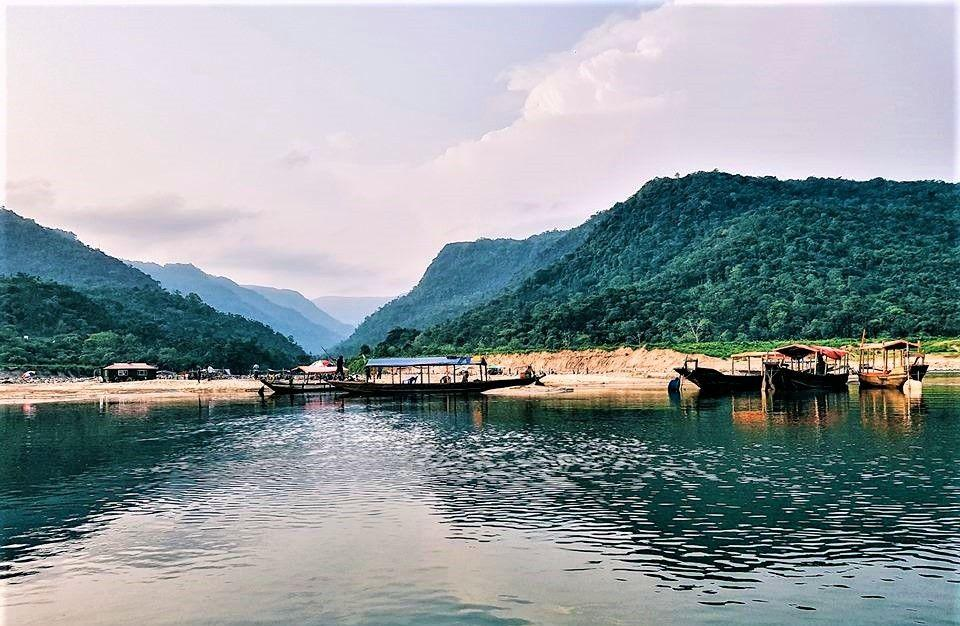
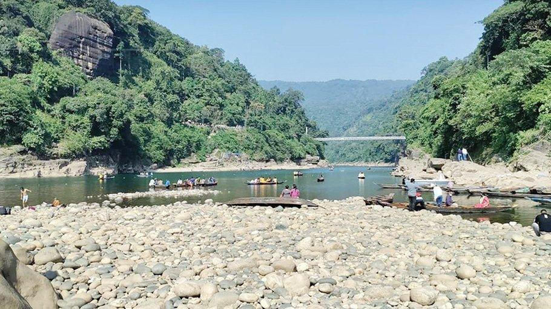
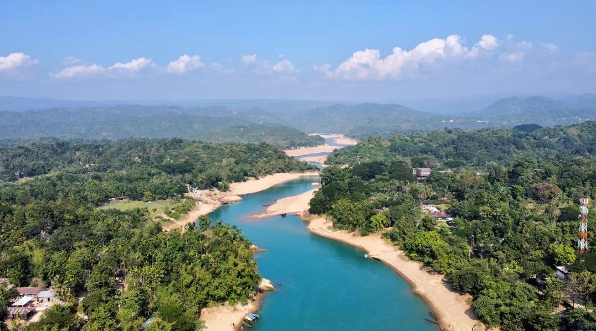
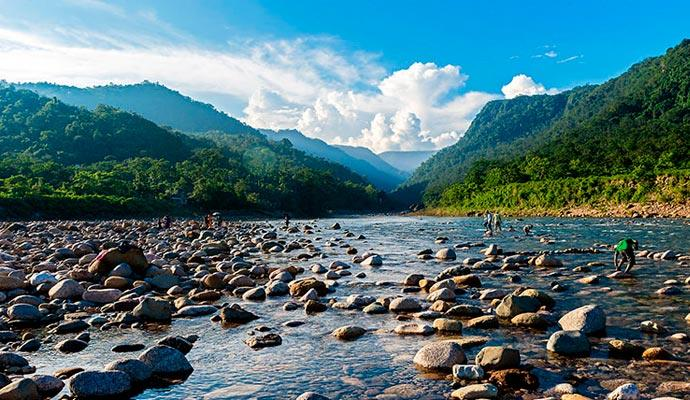
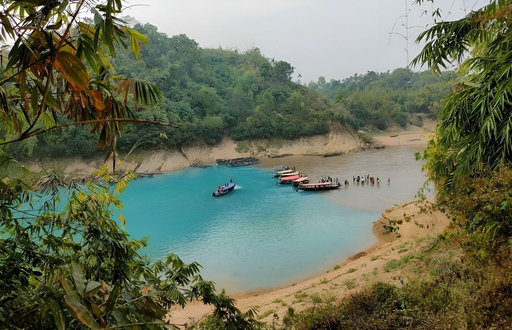

Bichanakandi
ビチャナカンディは、透明な川、石、 緑豊かな山々で有名な美しい観光地です。

Ratargul Swamp Forest
ラタルグルは、バングラデシュで有名な 淡水湿地林です。ボートで森林を楽しめます。

Jaflong
ジャフロンは、山、川、石、美しい自然景観で 有名な人気観光地です。

Lalakhal
ララカルは、青緑色の美しい川と 静かな自然環境で有名です。

Madhabkunda Waterfall
マダブクンダ滝は、美しい自然と 大きな滝で有名な観光地です。

Srimangal Tea Garden
シュリモンゴルは、広大な茶畑と 緑豊かな自然で有名です。